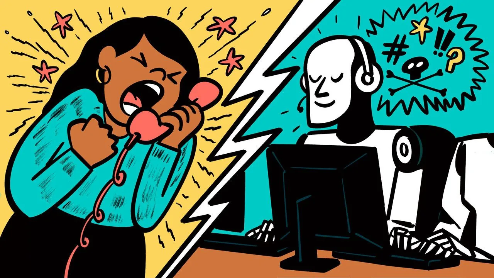

Called out
A ticket beyond
Technical Support Teams in the Age of AI

It’s a rainy Tuesday morning at a rising SaaS startup, and the technical support inbox is already overflowing. Panicked emails about login errors mix with chat pings from users struggling to find a hidden feature. The support agents – the unsung first responders of the software world – spring into action. They know every interaction counts: over 70% of consumers will switch to a competitor after multiple bad experiences, according to Zendesk.
In SaaS (software-as-a-service), where customers pay month after month, a single glitch or misunderstanding could mean a lost subscription. The support team’s mission isn’t just to fix bugs or reset passwords; it’s to ensure customers fully understand the product’s value, smoothing every bump on the user journey to prevent churn. In other words, a great support conversation can be the difference between a loyal customer and a lost customer.
The Front Lines: Roles and Goals
Technical support team members wear many hats. On any given day, a support agent might be an educator guiding a new user through a feature, a detective troubleshooting an unexpected error, or a therapist calming a frustrated client. The overarching goal is the same: resolve the customer’s issue completely – and do it with such clarity and care that the user comes away more confident in the product than before.
This means reiterating the product’s value at every interaction, not just expeditiously closing tickets. A good support rep shortens the learning curve of a complex app and helps customers unlock features they might never have discovered on their own. The payoff for the business is huge: effective support accelerates product adoption, boosts customer satisfaction, and protects the recurring revenue stream that SaaS firms rely on.
In my opinion, support isn’t a mere cost center – it’s a retention engine. In fact, studies show 72% of consumers have stopped doing business with a company after just one bad support experience, whereas resolving issues effectively builds loyalty. The stakes riding on each support interaction are sky-high.
This high-pressure mandate has traditionally been met with a combination of human empathy and technical expertise – bolstered by an evolving arsenal of tools. Over the past decade, SaaS support teams have adopted various technologies to help them serve customers faster and more consistently. Ticketing systems became the backbone, funneling customer queries from emails and web forms into an organized queue instead of an agent’s chaotic inbox. A good helpdesk doesn’t just track issues; it prioritizes and routes them, ensuring nothing falls through the cracks. Meanwhile, live chat brought real-time immediacy to support. Instead of waiting hours for an email reply, customers could get answers in minutes through in-app chat windows or messaging platforms. And for the support agents, chat opened a chance to juggle multiple conversations at once or use chatbots to greet users and handle basic questions. It’s no coincidence that using helpdesk software and live chat has been shown to streamline support conversations and improve resolution quality – these tools imposed order and speed on an inherently unpredictable workflow.
Perhaps the most ubiquitous efficiency booster has been the humble scripted response. Also known as macros or canned replies, these are pre-written answers for common questions – the copy-paste snippets that turn a five-minute typing exercise into a one-click response. “Macros, canned response, scripts, templates…call them what you want,” writes Jeremy Watkin, a customer support director, who counts speed and accuracy among their benefits. With a well-crafted library of templates, a support agent can respond to “How do I reset my password?” or “Is there a discount for annual plans?” in seconds, with a friendly, polished answer that has been refined over time. This kind of positive scripting not only saves time but helps maintain a consistent, on-brand voice across the team. The result: less waiting for customers and fewer errors under pressure.
Yet for all their benefits, these first waves of support automation had their limits. Traditional chatbots followed decision trees – helpful for simple FAQs, but easily stumped by anything unexpected. Ticket systems and routing rules could sort issues, but not actually solve them. And canned responses, if overused, risked turning service robotic. Customers can tell when they’re getting a one-size-fits-all answer. The moment a reply feels copy-pasted or doesn’t quite address the question, frustration mounts. “The agent didn’t actually read my question and instead sent me this canned response” is a comment Watkin says he sees in customer surveys, and it shows how impersonal scripts can backfire.
In short, earlier automation helped support teams cope with volume and standardize service, but it didn’t replace the need for a savvy human to really understand and resolve the customer’s problem. The hardest issues still had to be untangled by Tier-2 specialists; the angriest customers still wanted a manager on the phone. As SaaS businesses scaled to thousands (or millions) of users, the gap between rising support demand and the ability of human teams to keep up became a looming challenge. Hiring more agents is expensive and not always feasible – yet letting service quality slip means users flee to competitors in a single click.
Automation Levels Up: From Scripts to Smart Agents
Now, a new technological wave is breaking in the support world – one that promises not just to streamline the work of human agents, but to fundamentally transform who (or what) handles customer issues. Generative AI has entered the chat. Powered by large language models that can understand and produce human-like text, generative AI is poised to handle a wide swath of support tasks that once required a person’s touch. These systems follow ordinary language, keep track of context and pick up on tone. They don’t rely on rigid scripts or predefined options. Ask a question in plain English (or Spanish, or Hindi – they’re multilingual by nature), and they can not only find an answer in the knowledge base, but phrase it in a friendly sentence. They can troubleshoot problems step-by-step, tailoring each follow-up question based on what the user said earlier. In essence, the latest AI support agents aim to mimic a talented human rep – one who’s always available, instantly scalable, and blissfully immune to burnout.
This isn’t just hype; it’s already happening. In 2023, Intercom – a customer messaging platform – surveyed support leaders and found 69% planned to invest more in AI over the following year, with 38% having already started. The rationale is clear. Imagine a virtual assistant that can instantly field the routine queries that bog down human agents: “How do I change my billing info?” “Why isn’t my integration working?” If AI can handle those in seconds, the support team can focus on tougher cases. Automation in support has always been about freeing up humans’ time, not removing the human element. Generative AI just takes this to a new level. Instead of simple chatbots that operate on “message in, response out” logic, we now have AI that can conduct a nuanced dialogue. “Real customers change their minds, ask clarifying questions, and expect the AI to follow along naturally,” says Adrian McDermott, CTO of Zendesk, noting how traditional bots struggled with anything outside their scripted flow. By contrast, the new AI systems can handle the twists and turns. They use techniques like retrieval augmented generation (grounding their answers in real help center data) and dynamic reasoning to stay on track. They can even decide when to deviate from a script – asking you a question if it’ll help pinpoint your issue.
This shift is evident in the tools major SaaS players are rolling out. Zendesk, a longtime leader in customer support software, has worked with OpenAI since 2023 to reinvent its chatbot technology. The result, in OpenAI’s words, is a “new class of agentic AI agents” that “lead conversations, reason through context, and drive toward resolution.” In early pilots, these agents handled multi-step support dialogues on their own. They can clarify what a customer needs, look up relevant policies or data, and even execute procedures like resetting an account or escalating a ticket – all without human intervention. The goal? Automate up to 80% of customer inquiries, reserving only the most complex or sensitive cases for people. It’s an ambitious target, but one Zendesk believes is reachable with this new adaptive approach.
Intercom has taken a similar plunge with its AI bot, Fin, which it bills as “the #1 AI agent for service.” Fin launched in 2023 on OpenAI’s GPT-4, moved to Anthropic’s Claude in 2024 and in March 2026 switched to Apex, a model of Intercom’s own. The aim was to do what previous bots couldn’t: answer not just simple FAQs, but the majority of real-world customer questions. At Lightspeed, a global commerce platform, Fin is now involved in 99% of support conversations, offers an answer in 95% and resolves up to 65%. Crucially, Fin is designed with a safety net: when it doesn’t know or lacks confidence, it can seamlessly hand off to a human agent. By closing as many as two-thirds of conversations on its own, it dramatically lightens the team’s load.
No discussion of AI in SaaS support would be complete without Salesforce, the CRM titan. In March 2023 it announced Einstein GPT, a generative AI copilot woven into the fabric of its CRM, which has since evolved into Agentforce. Einstein GPT was pitched to “generate specific responses for customer service professionals to more quickly answer customer questions.” More impressively, it would draft entire knowledge base articles from past case notes. Every support agent knows the pain of writing up a help article after solving a novel problem; Einstein GPT proposed to do it for them in seconds, turning one customer’s resolved ticket into documentation that can help thousands of others. By drawing on a company’s own CRM data, it would tailor its suggestions to the business. The aim was a virtuous cycle: the AI learns from past support interactions to improve future ones, while agents get AI-crafted drafts that they can refine and send – saving time without sacrificing the personal touch. Customer service becomes faster and more personalized at once.
Meanwhile, Freshworks – maker of the popular Freshdesk support suite – has put its Freddy AI to work across support. Freddy isn’t a single bot but a collection of AI tools launched in 2023: Freddy Self Service (an AI agent for customer queries), Freddy Copilot (an assistant for human agents), and Freddy Insights (analytics). In October 2024 Freshworks unveiled a new Freddy AI Agent, which in private beta resolved an average of 45% of customer support requests. That’s nearly half of issues handled from start to finish by AI – customers got their answers or fixes without any human stepping in. The AI agent works across channels (web chat, email, even Slack or Teams), and it learns your company’s FAQs and policies in minutes by ingesting your help center content. “The best part is how quickly it can be deployed,” says Amanda Pope, a product manager at Bchex, a background-check company. With the FAQ and data ready, Pope adds, a new agent takes 20 minutes. For a mid-sized business, it’s like instantly training a new support rep who’s read the entire company wiki and never sleeps. And when this AI agent is stumped or when a VIP client needs hand-holding, Freddy gracefully forwards the conversation to a human agent – complete with a summary so the human doesn’t start cold.
For the support teams at these companies, the impact is transformative. Response times that used to be hours are now seconds. Customers can get 24/7 help in a conversational format, boosting satisfaction and cutting wait times. One obvious benefit is cost: AI agents don’t demand salaries or overtime, so handling more tickets with bots can bend the customer support cost curve down. Traditionally, if your user base doubled, your support volume would too – and you’d need to hire more staff in kind. But SaaS firms discovered that automation lets them scale support without a linear rise in headcount or expense. Self-service portals, chatbots, and now generative AI mean one agent (human or otherwise) can do the work that once required many. Hiver describes SaaS support as “easily scalable with automation, bots, and self-service options,” whereas old-school support had no choice but to add bodies at high cost as the customer base grows.
However, the equation isn’t as simple as AI in, humans out. In practice, these tools are as much about augmenting human agents as replacing them. The best SaaS support teams now function like a human-AI hybrid, each doing what they do best. The AI copilot features in tools like Zendesk and Freshdesk illustrate this well: while an AI agent might handle a straightforward refund request autonomously, a human agent handling a complex issue can rely on AI to do grunt work in the background – searching knowledge bases, summarizing long customer descriptions, even suggesting the next reply. For example, Zendesk’s suite can auto-suggest a first response draft to a ticket based on similar past cases and knowledge articles, saving the agent from starting from scratch. It can also instantly summarize a messy multi-email thread so a new agent taking over doesn’t need 10 minutes to read it all. Freshworks’ Freddy Copilot similarly suggests replies, summarizes conversations, and translates messages in real time for agents. In the hands of a skilled support rep, such AI tools are like a superpower – they shorten research time, ensure nothing is overlooked, and even adjust the tone of messages on the fly (making an overly formal draft sound more empathetic, for instance). The agent remains in control, but they’re more efficient and consistent with AI riding shotgun.
Augmenting the Human Touch (Without Erasing It)
What does all this mean for the people who make a career in customer support? There’s understandable anxiety. If a bot can do the first reply, the second, and maybe the whole thing, what’s left for the humans? The optimistic view – and so far, the prevailing narrative in the industry – is that AI will free human agents to focus on higher-value work, rather than eliminate them. “Automation is about freeing up your team’s time, not removing the human element,” says Hiver’s guide. In the real world, companies using these AI tools report something similar: their human agents are still essential, but their roles are evolving. Pope says the AI takes the load off Bchex’s support team, who “can now spend their time and resources to address tougher issues” – the thorny problems, critical bugs, or sensitive customer situations where a personal touch is irreplaceable. In this way, the AI is like a tireless Level-1 support rep, triaging and solving basic cases, while human staff move up the value chain to Level-2 and Level-3 expertise.
From a cost perspective, companies see a chance to rein in the ballooning expense of large support operations. If one AI agent can resolve 50% of tickets, that might mean you don’t need to hire quite so many new agents next quarter, or you can handle a surge of users without the support backlog exploding. But many SaaS leaders are quick to position AI as a productivity booster rather than a pink slip machine. “We’re only just beginning to see the positive impact of agentic AI on the workplace,” says Freshworks CTO Murali Swaminathan, who envisions an “orchestrated symphony” of specialized AI agents working together with humans. In his view, AI agents will increasingly handle the bulk of routine requests, while human experts oversee the process and step in for exceptions. Snow Tempest, a research manager at IDC, makes a similar point about IT help desks, saying AI agents can “reduce the burden of rote work” and “reduce burnout”. In theory, that could mean happier support teams and lower turnover – a big win, considering how emotionally taxing front-line customer service can be.
Still, the rise of AI in customer support raises important questions about quality and trust. An answer that arrives in 2 seconds is great – only if it’s correct and helpful. The nightmare scenario is an AI confidently giving a wrong or harmful answer to a customer, which can erode trust faster than an unresolved ticket. SaaS companies are well aware of this “hallucination” risk (when an AI makes up an answer). That’s why so much focus is placed on guardrails and hybrid models. For instance, Zendesk’s new AI agents operate within strict guidelines: they use retrieval techniques to base their answers on verified knowledge base content and company rules, and they show a “chain of thought” that developers can review to audit how the AI is reaching its conclusions. If the AI decides to execute an action (like refunding a transaction or making an account change), it’s confined by the procedures defined by the business – often needing a confirmation or presenting a preview of steps to an agent for approval. In Salesforce’s world, the pitch was that outputs would be grounded in the customer’s own CRM data. These measures are all about ensuring that AI-driven support stays accurate, secure, and on-brand. It’s early days, and no one is claiming the systems are perfect. But each successful hand-off or each trusted automation builds confidence that more of the support process can safely be delegated to machines.
Then there’s the matter of the “human touch.” Customer support, at its heart, is a people business. Many users still take comfort in knowing a real person has heard them and cares about their issue. Can an AI empathize? Can it build rapport? The latest chatbots do try – they can apologize politely and use a concerned tone. Yet, there is a conscious effort in the SaaS industry not to lose sight of the value of human empathy. Companies talk about maintaining a balance between efficiency and personal connection. The most advanced support operations strive for personalization at scale – a vision where AI helps tailor solutions for each customer, but feels personal, not generic. In practical terms, this might mean AI handles the first few exchanges (and maybe the entire resolution) for a straightforward query, but if a customer is upset or the issue is sensitive, a human is looped in to offer apologies or reassurance in a way only a human can. Some companies are exploring hybrid responses – AI drafts the message, but the human adds a personal line or two and double-checks the tone before hitting send, blending consistency with warmth. As support teams become “AI orchestrators,” training shifts to teaching agents not just how to solve problems, but how to work with AI – knowing when to trust the suggestions and when to intervene with a human touch.
The New Normal for SaaS Support
In the span of just a few years, the role of a SaaS support team is being reinvented. The traditional model – rows of agents feverishly typing replies – is evolving into something more agile and tech-powered. Today, a single support interaction might involve three parties: the customer, a frontline AI, and a human specialist on standby. The implications for the SaaS industry are profound. Support has long been a major cost center for subscription software businesses; with generative AI, those costs could be trimmed significantly, or at least redeployed into more strategic areas. Efficiency gains are tangible – faster response times, higher volumes handled – but so is the potential for improved quality. An AI that instantly searches a thousand past tickets can surface insights (and solutions) that a lone agent might miss. A well-trained model might suggest a workaround to a bug that even the product team hasn’t documented yet, simply because it “read” about a similar scenario in another case. In the best outcome, AI support agents make SaaS companies more responsive and knowledgeable than ever before, which in turn keeps users happier and more loyal.
The competitive landscape will likely shift as well. Just as companies once vied on having the best features, they may soon compete on who offers the smartest, fastest support. If ChatGPT-like helpers become a standard part of the SaaS customer experience, users will come to expect instant, accurate answers 24/7. Late at night, when your database crashes, you might visit your SaaS provider’s help center and find not a list of articles, but a friendly AI chat bubble ready to walk you through a fix – or escalate you to a human on-call if it hits a wall. That kind of always-on, intelligent support could become a key selling point. Gartner, a research firm, predicts that by 2028 a third of enterprise software applications will include agentic AI, and that at least 15% of day-to-day work decisions will be made autonomously. In the same breath it predicts that more than 40% of agentic AI projects will be canceled by the end of 2027.
Of course, the story is still unfolding. We’re in the early chapters of generative AI in customer support, and there will be bumps ahead – whether it’s an infamous AI goof that goes viral, or pushback from customers who just really want to talk to a person. But the trajectory seems clear. An old order is yielding to a new one: support reps armed with playbooks and ticket queues now share their desks with AI copilots and digital agents. In countless small interactions – a password reset here, a troubleshooting session there – the fabric of SaaS support is being rewoven by artificial intelligence. The companies that master this blend of technology and humanity stand to set a new standard for service: ultra-efficient and deeply empathetic. In the end, the heart of customer support remains the same as it ever was – help the customer, solve the problem, make them feel valued. The tools may be radically different, but if anything, they exist to double down on that mantra. With AI taking over the drudgery and supplementing human expertise, support teams can focus more than ever on truly caring for customers. And that, ironically, may be the most “human” improvement of all.